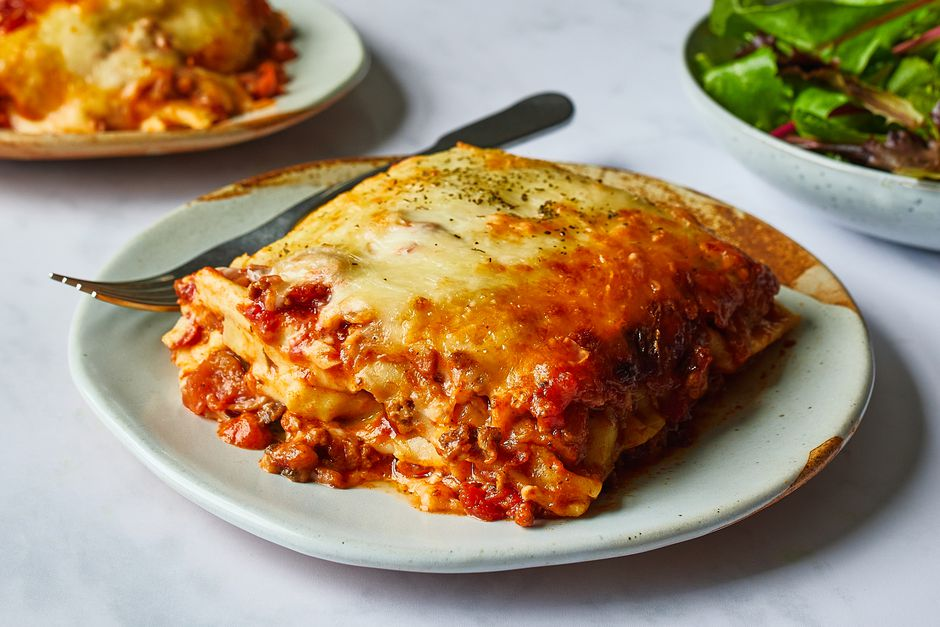

Lasagna

Description
The perfect lasagna recipe made with parmesan ricotta cheese filling,
melted mozzarella cheese, lasagna noodles, and a robust tomato meat
sauce. It is the best lasagna recipe!
Ingredients:
- 1 Tablespoon Olive Oil
- 1 small diced Onion
- 1 pound Ground Beef
- 5 minced Garlic Cloves
- 3/4 teaspoon Salt
- 1/2 teaspoon Pepper
- 32 ounce jar Marinara Sauce
- 2 cups Whole Milk Ricotta Cheese
- 1 cup grated Parmesan cheese
- 1 large Egg
- 1 teaspoon Dried Basil
- 3/4 teaspoon Salt
- 1/2 teaspoon Pepper
- 12 Lasagna Noodles
- 4 cups Mozzarella Cheese
Directions:
- Preheat oven to 375 degrees. Heat olive oil in a large skillet over
medium heat. Add onion and cook for about 3-4 minutes. Add ground beef
and increase heat to medium-high. Cook until the meat begins to brown,
about 5 minutes. Sprinkle with garlic, salt, and pepper.
- Lower the heat to low and add marinara sauce. If you want the lasagna
to be extra saucy, I suggest adding more sauce. Let the sauce continue
to simmer.
- In a small bowl, stir together the ricotta, parmesan, egg, basil,
salt, and pepper.
- Cook lasagna noodles according to package instructions.
- Spread the bottom of a 9 x 13 baking pan with 1/4 cup of the meat sauce. Place
3 noodles in a single layer on top of the sauce. Spread each noodle with
parmesan ricotta cheese filling and sprinkle with 1 cup of mozzarella cheese and
meat sauce. Repeat. Finish with remaining mozzarella cheese.
- Spreal a large piece of foil with non-stick cooking spray and cover
the lasagna. Bake for 15 minutes and the remove the foil. Continue to
bake until the cheese is bubbling, about 25 minutes longer. Cool
the lasagna for 10 minutes before cutting.
Home